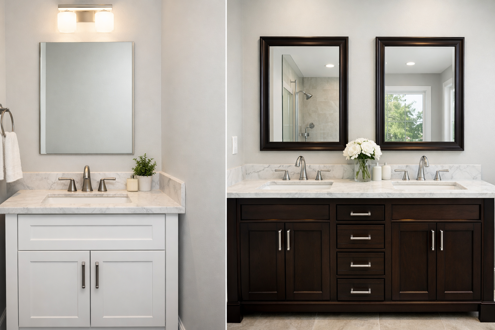

Single vs Double Sink Vanity: Which Is Right for You?

Home & Bathroom Expert | Bathroom renovation consultant
This article contains affiliate links. If you purchase through these links, we may earn a small commission at no extra cost to you. Full disclosure.
Quick Answer: Single or Double Sink?
Choose single sink if your bathroom is under 60" wide, you value counter space over dual sinks, or you are the primary user. Choose double sink if two people share the bathroom daily, you have 60"+ of wall space, and you want to eliminate morning conflicts.

The single vs double sink vanity debate is one of the most common bathroom renovation dilemmas. Get it right, and your bathroom works perfectly for your lifestyle. Get it wrong, and you are stuck with either wasted space or daily frustration for years to come.
This guide breaks down every factor you need to consider: space requirements, cost differences, plumbing implications, resale value, and lifestyle compatibility. By the end, you will know exactly which option is right for your specific situation.
We will also recommend specific products for each category. For our complete vanity reviews, see our best bathroom vanities roundup. Need something compact? Check our small bathroom vanity picks.
Price ranges: single sink vanities start at $149.99, while quality double sink vanities typically start around $499.99. The gap narrows significantly when you factor in per-sink cost and the convenience value.
Why the Single vs Double Sink Choice Matters
This is not just an aesthetic decision. Your vanity sink configuration affects daily routines, storage capacity, bathroom layout, plumbing costs, and even your home's resale value. Making the wrong choice is expensive to reverse, as it involves plumbing changes, new countertops, and potentially new cabinetry.
The Daily Impact
Consider your morning routine. If two people need to brush teeth, wash faces, and do hair at the same time, a single sink creates a bottleneck that adds stress to every morning. Conversely, if only one person uses the bathroom at a time, a double sink wastes valuable counter space that could hold toiletries and decor.
According to a survey by the National Kitchen and Bath Association, dual vanities are the most requested feature in master bathroom renovations, cited by 67% of homeowners. However, the same survey shows that 40% of installed double vanities are used simultaneously only a few times per week.
Single Sink Vanity
- Available in all sizes (18" to 60"+)
- Maximum counter space per dollar
- Simpler plumbing (1 drain, 1 supply)
- Lower total cost
- Works in any bathroom size
- More storage per linear inch
Best for: Solo users, small bathrooms, guest baths, budget renovations
Double Sink Vanity
- Requires minimum 60" width
- Eliminates morning conflicts
- Requires double plumbing
- Higher total cost
- Needs spacious bathroom
- Increases resale value
Best for: Couples, master bathrooms, families, home value
Key Benefits of Each Option
Single Sink Advantages
- Counter Space: A 48-inch single sink vanity provides roughly 3x more usable counter space than a 48-inch double sink vanity.
- Storage: With only one plumbing stack under the sink, you get significantly more usable cabinet storage.
- Cost: Single sink vanities cost 30-50% less than comparable double sink models, and you save on plumbing installation.
- Flexibility: Available in sizes from 18 to 72 inches, fitting any bathroom from powder rooms to master suites.
- Cleaning: One sink to clean is half the maintenance of two.
Double Sink Advantages
- Convenience: Two people can use the bathroom simultaneously without any conflict or waiting.
- Personal Space: Each person gets their own sink, countertop area, and storage drawers.
- Resale Value: Double sinks in master bathrooms are a top feature for home buyers, especially in mid-to-high-end markets.
- Organization: Clear separation of personal items prevents clutter and disagreements.
- Symmetry: Double vanities create a balanced, symmetrical design that is inherently pleasing to the eye.
Key Comparison Factors
We compared single and double sink vanities across the factors that matter most to real homeowners.
Space Requirements
- Single Sink Minimum: 18 inches wide (for compact spaces) to 48+ inches for generous counter space.
- Double Sink Minimum: 60 inches wide. Below this, the sinks are uncomfortably close and counter space disappears. Ideal is 72 inches.
- Bathroom Size: Double sinks work best in bathrooms at least 8 feet wide by 10 feet long. Smaller bathrooms feel cramped with double vanities.
Cost Comparison
| Cost Factor | Single Sink | Double Sink |
|---|---|---|
| Vanity Cabinet | $150 - $1,500 | $400 - $2,500 |
| Countertop | $100 - $800 | $200 - $1,200 |
| Plumbing (new install) | $200 - $500 | $500 - $1,200 |
| Faucets | $50 - $300 | $100 - $600 |
| Total Range | $500 - $3,100 | $1,200 - $5,500 |
Plumbing Complexity
Single sink requires one drain, one hot water supply, and one cold water supply. Double sink doubles all of that, plus requires a shared or dual vent system. If your bathroom currently has single plumbing, adding a second sink typically costs $500-$1,200 for the plumbing work alone.
Our Best Picks: Single and Double Sink

ARIEL Cambridge 36" Single Sink Vanity
Best For: Premium single sink installation in any bathroom
Solid wood construction, 1.5-inch quartz countertop, 5 dovetail drawers, and 2 soft-close doors. This is the gold standard for single sink vanities. See our full review.
Check Price on Amazon

LUXOAK 60" Farmhouse Double Vanity with Sliding Barn Door
Best For: Couples, master bathrooms, farmhouse style
60-inch double sink vanity with sliding barn door, distressed white finish, and multiple drawers. Incredible value for a double vanity under $500. Read our full review.
Check Price on Amazon

Yaheetech 24.5" Modern Single Sink Vanity
Best For: Budget renovations, guest bathrooms
Complete vanity with ceramic basin at an unbeatable price. 252 positive reviews confirm consistent quality. Perfect for guest baths and apartment bathrooms.
Check Price on Amazon
Single vs Double Sink: Side-by-Side Comparison
| Feature | Single Sink | Double Sink | Winner |
|---|---|---|---|
| Minimum Width | 18 inches | 60 inches | Single (flexibility) |
| Counter Space | More per inch | Divided between users | Single |
| Storage Capacity | More usable space | Split by plumbing | Single |
| Morning Convenience | One user at a time | Both users simultaneously | Double |
| Installation Cost | $200-$500 | $500-$1,200 | Single |
| Resale Value | Standard | Premium in master bath | Double |
| Maintenance | 1 sink to clean | 2 sinks to clean | Single |
| Personal Space | Shared | Individual zones | Double |
Decision Framework: Which Should You Choose?
Use this framework to make the right decision for your specific situation. For general vanity buying advice, see our complete buying guide.
Choose Single Sink If:
- Your bathroom is under 60 inches wide. There is simply not enough room for two sinks without sacrificing usability.
- Only one person primarily uses the bathroom. A single sink with extra counter space is more practical than an unused second sink.
- You value counter space over dual sinks. A 48-inch single vanity provides significantly more usable surface area than a 48-inch double.
- Budget is a primary concern. Single sink vanities cost 30-50% less and save on plumbing installation.
- This is a guest bathroom or powder room. Guests do not need two sinks.
Choose Double Sink If:
- Two people use the bathroom every morning. The convenience of simultaneous use is a daily quality-of-life improvement.
- Your bathroom has 60+ inches of wall space. This is the minimum; 72 inches is more comfortable.
- You are renovating a master bathroom for resale. Dual sinks are a top buyer preference and can increase perceived home value.
- You and your partner have different schedules for counter tidiness. Separate sinks mean separate messes.
- You have children sharing a bathroom. Two sinks reduce morning chaos significantly.
The Compromise Option
If you cannot decide, consider these middle-ground approaches:
- Extra-Long Single Sink Vanity (60-72"): Provides massive counter space and storage with one sink. You can always add a second sink later by cutting the countertop.
- Trough Sink: A single, extra-wide sink that two people can use simultaneously. Gives the dual-use benefit without the dual-plumbing cost.
- His and Hers Separate Vanities: Two smaller vanities on the same wall with a gap between them. Creates personal zones without requiring a single large piece.
Installation Considerations
The installation complexity differs significantly between single and double sink vanities.
Single Sink Installation
- Standard plumbing: 1 drain, 1 hot supply, 1 cold supply.
- Most homeowners can handle the vanity installation as a DIY project.
- Plumbing connections are straightforward with standard P-trap and supply hoses.
Double Sink Installation
- Requires: 2 drains, 2 hot supplies, 2 cold supplies, proper venting for both.
- If converting from single to double, plan for $500-$1,200 in plumbing modifications.
- Professional installation is strongly recommended for the plumbing work.
- Ensure your bathroom's drain line can handle the additional flow from two sinks.
Common Installation Mistakes
- Not verifying existing plumbing location before purchasing the vanity.
- Choosing a double vanity that is too tight for the wall space.
- Forgetting to account for the mirror and lighting layout above a double vanity.
- Underestimating the weight of large double vanities with stone countertops.
Frequently Asked Questions
Q: Is a double sink vanity worth it?
A double sink vanity is worth it if two people regularly use the bathroom simultaneously, you have at least 60 inches of wall space, and your budget allows. The daily convenience and resale value typically justify the higher cost in master bathrooms.
Q: How much space do you need for a double sink vanity?
You need at least 60 inches of wall space for a double sink vanity, with 72 inches being more comfortable. The bathroom should be at least 8 feet wide to allow adequate clearance on all sides.
Q: Does a double sink vanity increase home value?
Yes, a double sink vanity in a master bathroom is a desirable feature that can increase perceived home value. Real estate experts consistently cite dual sinks as a top buyer preference, particularly in homes above the median price.
Q: Can I replace a single sink vanity with a double?
Yes, but it requires additional plumbing work including a second drain and water supply lines. Budget $500-$1,500 for the plumbing modifications depending on your current layout and how far the new plumbing must travel.
Q: What is better for resale: single or double vanity?
For master bathrooms, a double vanity is better for resale. For guest bathrooms and powder rooms, a single vanity with more counter space is preferred. Always match the vanity type to the bathroom's purpose and size.
Final Verdict: Single vs Double Sink Vanity
After analyzing every factor, here is our definitive recommendation:
- For Master Bathrooms (60"+ wall space, shared by couple): Go double. The LUXOAK 60" Double Vanity at $499.99 is incredible value.
- For Guest Bathrooms: Always single. The Yaheetech 24.5" Vanity at $149.99 is our budget champion.
- For Premium Single Sink: The ARIEL Cambridge 36" at $1,115 is built to last decades.
- For Small Bathrooms: Single sink only. See our small bathroom vanity guide for the best compact options.
The bottom line: match your vanity to your bathroom's purpose and size. A well-chosen single sink vanity in a guest bath and a quality double in the master is the ideal combination for most homes. Do not force a double sink into a space that cannot support it, and do not settle for a single when a double would genuinely improve your daily life.